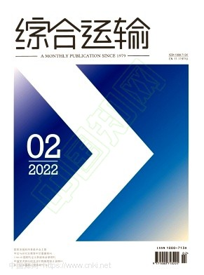

About Me
Hi, I’m Kaylin (唐慧琳). I am a postgraduate student at The University of Western Australia, currently in my final semester of Information Technology studies, specialising in Applied Computing. I’m based in Perth, WA, and always open to potential work and collaboration opportunities.
Before moving into IT, I completed a Bachelor of Engineering in Nanjing, China. I became interested in how computing can work across industries to solve real-world problems, which led me to pursue postgraduate study in IT and build a stronger technical foundation. My current interests are IT support and cloud services, with a particular interest in the infrastructure that supports the continued growth of AI.
Technology has taught me to think more logically and systematically, but I also enjoy seeing the world through a different lens. I’d like to share two lines that I particularly like:
“寄蜉蝣于天地，渺沧海之一粟。哀吾生之须臾，羡长江之无穷。”
“In case I don't see ya, good afternoon, good evening, and good night!”
Education
The University of Western Australia
Master of Information Technology
Specialisation: Applied Computing | Full-time
Perth, Australia
February 2025 - February 2027
Nanjing University of Aeronautics and Astronautics
Bachelor of Engineering
Major: Air Transportation Management | GPA：3.8/5.0
Nanjing, China
September 2017 - June 2021
Projects
Huilin Tang Photography — Cloud-Native Photography Platform
Personal Project · Full-Stack Development
September 2026
- Architected and delivered an end-to-end cloud-native photography platform, covering application architecture, responsive UI, structured data, media processing, automated testing, and production deployment.
- Designed the production architecture on Cloudflare, running Next.js on Workers, serving optimised images from R2, storing metadata in D1, and using KV and CDN caching to minimise repeated application-layer computation.
- Built an automated media ingestion pipeline for WebP derivative generation, EXIF extraction and normalisation, deterministic asset identification, duplicate prevention, and structured database publishing.
- Diagnosed and optimised Worker and CDN performance by tracing cache misses and Worker CPU behaviour, restructuring cache paths, and implementing staged deployment with CDN warm-up—reducing median production Worker CPU time to approximately 14 ms.
- Established a production-oriented engineering workflow with Git, D1 migrations, Playwright E2E/accessibility testing, cross-browser validation, staged releases, Cloudflare WAF security hardening, production traffic/error monitoring, and systematic debugging.
- Technology / Infrastructure
- Next.js · TypeScript · Cloudflare Workers · R2 · D1 · KV · CDN / Edge Cache · Cloudflare WAF · Drizzle ORM · Playwright · Wrangler · GitHub
SitBuddy — Modern Babysitting Connection Platform
Group Project · Coursework Practice
March 2026 – May 2026
- Developed SitBuddy, a full-stack client–server web application built with Flask (Python), SQLAlchemy, SQLite, HTML, CSS, JavaScript, and Bootstrap, connecting parents with babysitters through search, booking, messaging, ratings, and location-based features.
- Took primary responsibility for the platform’s UI/UX design and implemented the asynchronous messaging feature, working across message models, Flask routes, templates, client-side JavaScript, and related tests.
- Gained practical experience with client–server architecture, routing, APIs, authentication, database-backed application logic, testing, and front-end/back-end integration through development of a complete local web application.
- Collaborated through GitHub and an Agile development workflow, coordinating code contributions, integration, version control, and team delivery; the project also used automated pytest checks through GitHub Actions.

Civil Aviation Data Warehousing & Network Analytics
Personal Project · Coursework Practice
February 2026 - June 2026
- Built an end-to-end data warehousing workflow for civil aviation datasets, including data extraction, cleaning, transformation, loading, and analytical modelling for downstream reporting and analysis.
- Designed a star-schema analytical warehouse to support multidimensional analysis of flight operations, airport performance, and passenger-related patterns, and used SQL to query and validate the resulting data model.
- Modelled the global airline network in Neo4j, using Cypher and APOC to explore airport connectivity, route relationships, and transit patterns through graph-based analysis.
- Produced analytical outputs through Power BI visualisations and association-rule analysis, translating processed aviation data into interpretable findings for operational and network-level decision support.
Experience
University IT of UWA
Winter Intern - New Student Portal (Phase 2)
June 2026 - July 2026
- Supported the pre-launch development of UWA’s Student Moment Platform (SMP), delivered through the new myUWA student portal, by gathering stakeholder feedback, identifying usability and functional issues, and contributing structured recommendations to the development team.
- Mapped onboarding and broader student-lifecycle workflows, then tested key user journeys to refine requirements, clarify feature needs, and support implementation priorities for the platform.
- Helped organise and facilitate a student workshop with approximately 20 participants, collecting user feedback and survey responses to support requirements elicitation and prioritise product improvements.
- Collaborated with UWA IT staff and fellow interns using tools including Confluence, gaining hands-on experience in stakeholder communication, collaborative documentation, and product refinement within an enterprise IT environment.
- Received an Excellent rating across the end-of-internship supervisor evaluation.

Visual China Group Co., Ltd. (VCG)
Part-time - Contract Photographer
March 2025 - Present
- Work as a contracted photographer and image contributor for the 500px community under VCG, producing and submitting original travel and landscape photography for commercial licensing.
- Over 110 photographs accepted into the commercial image library and made available for sale, demonstrating the progression of a personal photography interest into commercially viable work.
- Continuously develop photographic, editing, and visual storytelling skills through self-directed learning, while using photography as a creative practice to maintain balance, curiosity, and resilience alongside academic and professional commitments.

Changzhou International Airport Group
Full-time - Airport Commercial Operations Analyst
July 2021 - March 2022
- Analysed airport operational and commercial data using Power BI, monitoring passenger throughput across different time periods and evaluating route performance, operating costs, and commercial efficiency to support management decision-making.
- Monitored airport shuttle operations and collected, consolidated, and analysed passenger and operational data to assess service performance and support day-to-day transport operations.
- Coordinated with major OTA platforms, including Trip.com and Ly.com, to plan and deliver promotional campaigns aimed at increasing passenger traffic and improving commercial performance.
- Supported route-development activities through market research, visits to partner airports, and communication with government stakeholders, contributing to discussions and negotiations around potential new air services.

Shanghai Hawker Pacific Business Aviation Service Centre
Summer Intern - Marketing
July 2020 - August 2020
- Gained hands-on exposure to FBO operations, business aviation service delivery, and airport-based commercial management within a specialist business aviation environment.
- Researched the business aviation sector and prepared a short industry report, summarising market developments and operational insights for the Marketing Department.
- Participated in the production of a short corporate introduction video, supporting content preparation and on-site filming for the organisation.
Research

Publication
Relationship between Evolution Characteristics of Aviation Carbon Emissions and Regional Economic Development
Feb 2022 · China Transportation Review
- Research Field: Transportation Engineering
- Keywords: Aviation carbon emissions; LMDI decomposition method; Kuznets curve; Decoupling model.
Aviation Carbon Emissions & Regional Economic Development
Group Member
May 2020 – May 2021
- Designed and implemented an aircraft-emissions calculation model based on ICAO LTO methodology, integrating aircraft movement records from the OAG database with engine fuel-flow and pollutant-emission factors from the ICAO Aircraft Engine Emissions Databank.
- Used the model to calculate annual aviation emissions for five major Greater Bay Area airports and generate the quantitative results used for subsequent trend and driving-factor analysis.
- Contributed to the resulting research, which applied LMDI decomposition, EKC regression, and decoupling analysis to examine the relationship between aviation emissions and regional economic growth.
- Received First Prize at the 6th NUAA Undergraduate Academic Forum.
- Sponsored by the National Undergraduate Innovation Training Program (Project ID: 202010287078).
Skills
- Cloud & Infrastructure
- Cloudflare Workers, R2, D1, KV, CDN / Caching, Wrangler · AWS (EC2, S3, IAM, DynamoDB, KMS)
- Software Development
- TypeScript, JavaScript, Python, C · Next.js, React · HTML, CSS
- Systems & Computing
- Linux & Open-Source Tooling · Bash · OpenMP · Slurm · Parallel Computing
- Data & Databases
- SQL · MySQL, PostgreSQL, SQLite / D1, Neo4j · Drizzle ORM
- Engineering Workflow
- Git, GitHub · Playwright · E2E & Accessibility Testing · CI/CD · Agile / Kanban
- Languages
- Mandarin · English (IELTS 7.0) · Japanese (Basic)
Awards
- UWA Global Excellence Scholarship (2025)